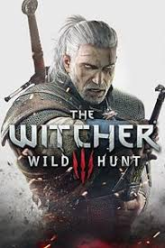

|
Rayman 3 Hooldum Havoc |
Rayman’s in prime form with new high-tech powers and gear like Shock Rockets, the LockJaw, Funky-Boards and other cool stuff. Charge into intense strategic battles with the crazed Hoodlum Army and massive transforming bosses. Plunge into enormous, eye-popping worlds packed with zany comedy and a wacked-out cast, featuring John Leguizamo as Globox, and enjoy a bizarre, epic adventure filled with a unique blend of humor.
One of the latest installments of the great Rayman series - awesome humor and great music
Great 3D platformer gameplay that challenges you on every step
A great variety of gameplay styles - from different flavors of platforming, to funky arcade racing |
4,99 |
|  |
The Witcher® 3: Wild Hunt |
The Witcher: Wild Hunt is a story-driven, next-generation open world role-playing game set in a visually stunning fantasy universe full of meaningful choices and impactful consequences. In The Witcher you play as the professional monster hunter, Geralt of Rivia, tasked with finding a child of prophecy in a vast open world rich with merchant cities, viking pirate islands, dangerous mountain passes, and forgotten caverns to explore.
PLAY AS A HIGHLY TRAINED MONSTER SLAYER FOR HIRE
Trained from early childhood and mutated to gain superhuman skills, strength and reflexes, witchers are a distrusted counterbalance to the monster-infested world in which they live.
Gruesomely destroy foes as a professional monster hunter armed with a range of upgradeable weapons, mutating potions and combat magic.
Hunt down a wide range of exotic monsters from savage beasts prowling the mountain passes to cunning supernatural predators lurking in the shadows of densely populated towns.
Invest your rewards to upgrade your weaponry and buy custom armour, or spend them away in horse races, card games, fist fighting, and other pleasures the night brings.
EXPLORE A MORALLY INDIFFERENT FANTASY OPEN WORLD
Built for endless adventure, the massive open world of The Witcher sets new standards in terms of size, depth and complexity.
Traverse a fantastical open world: explore forgotten ruins, caves and shipwrecks, trade with merchants and dwarven smiths in cities, and hunt across the open plains, mountains and seas.
Deal with treasonous generals, devious witches and corrupt royalty to provide dark and dangerous services.
Make choices that go beyond good & evil, and face their far-reaching consequences.
CHASE DOWN THE CHILD OF PROPHECY
Take on the most important contract to track down the child of prophecy, a key to save or destroy this world.
In times of war, chase down the child of prophecy, a living weapon of power, foretold by ancient elven legends.
Struggle against ferocious rulers, spirits of the wilds and even a threat from beyond the veil – all hell-bent on controlling this world.
Define your destiny in a world that may not be worth saving.
FULLY REALIZED NEXT GENERATION
Built exclusively for next generation hardware, the REDengine 3 renders the world of The Witcher visually nuanced and organic, a real true to life fantasy.
Dynamic weather systems and day/night cycles affect how the citizens of the towns and the monsters of the wilds behave.
Rich with storyline choices in both main and subplots, this grand open world is influenced by the player unlike ever before.
MATURE CONTENT DESCRIPTION
The developers describe the content like this:
This Game may contain content not appropriate for all ages, or may not be appropriate for viewing at work: Nudity or Sexual Content, General Mature Content
|
49.99 |